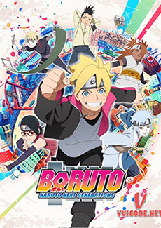
01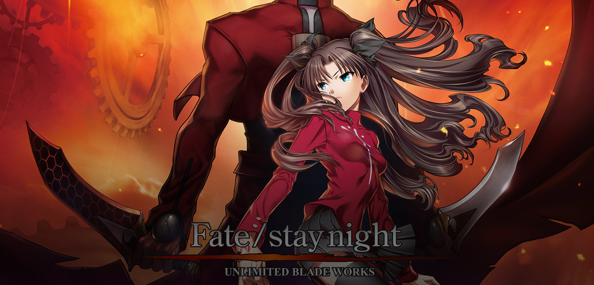
RNGMVERSE / DISCOVER THE UNIVERSE
Stories for
the in-between.
Four worlds. Four signals. One horizon that keeps moving. Enter the work of novelist Weiz Orina.
01
04
The archive / 2026
Find your
entry point.
The RNGMVERSE is built in chapters. Start anywhere. The worlds are connected by pressure, distance, memory, and the things we cannot leave buried.
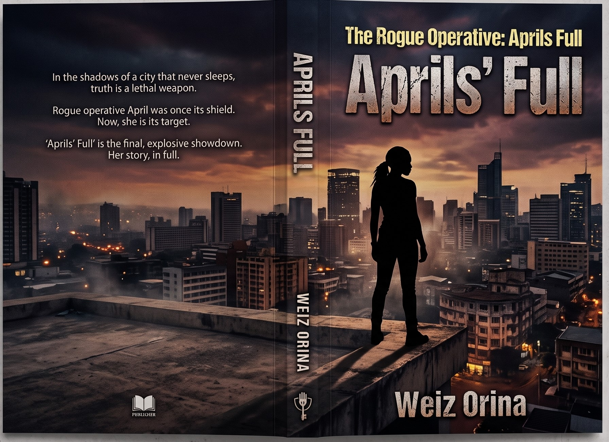
Book I / The rogue operativeApril’s FullPower has a price.
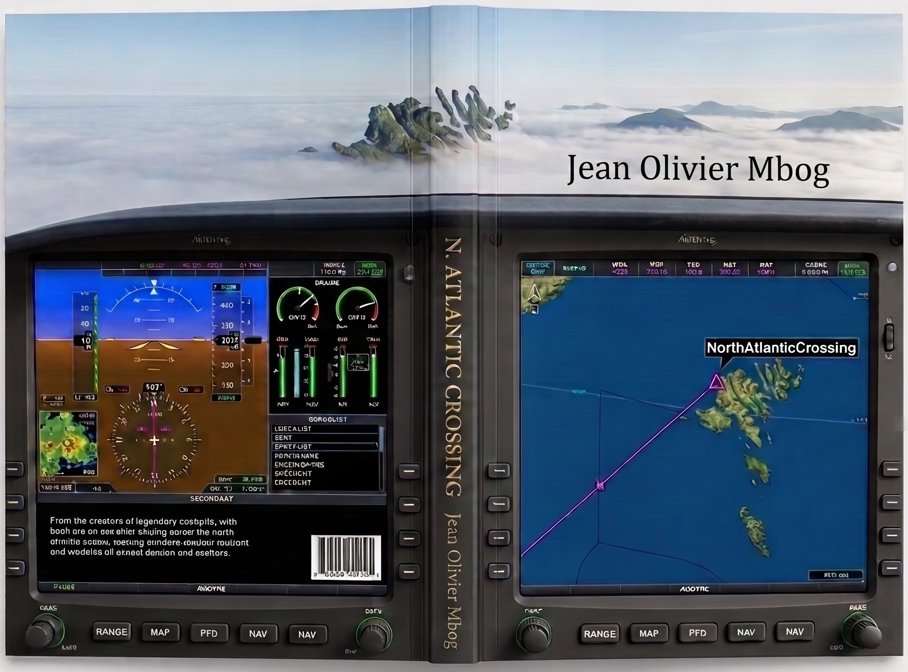
Book II / The northern routeNorth AtlanticWhen the sea has no mercy, fly.
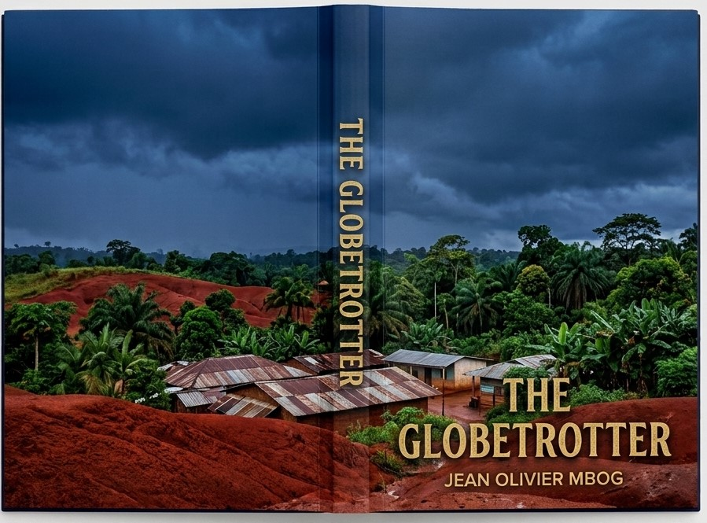
Book III / A life in flightThe GlobetrotterA childhood. A cockpit. A calling.
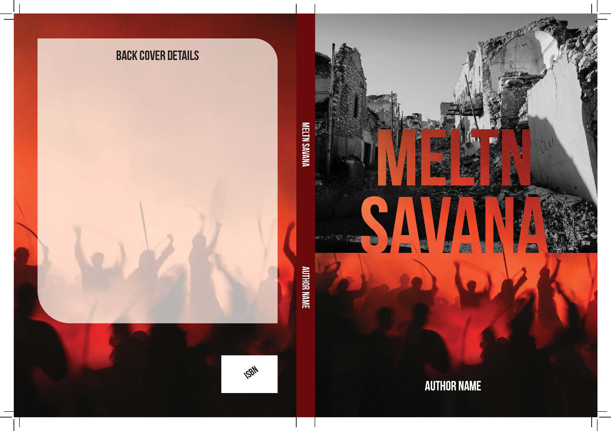
Book IV / ClassifiedMeltn SavanaThe dust is still speaking.
Trending now
Signals in motion
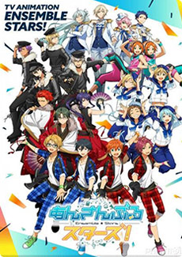
02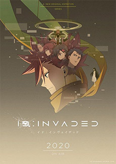
03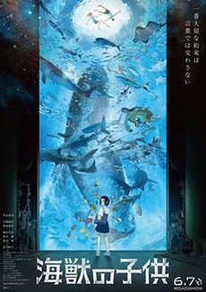
04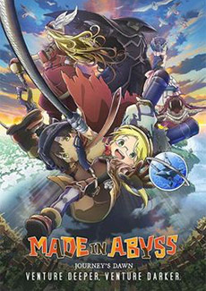
05“
Every story begins as a signal.
Someone has to listen.
— Weiz Orina, studio notes
Latest from the universe
More to explore
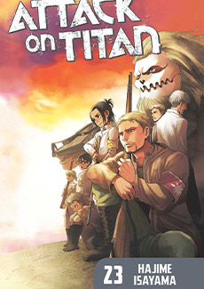
Dispatch / 09.22.26
The horizon is not the edge.
A short note on distance, return, and the moment a familiar world becomes strange.
Read dispatch ↗